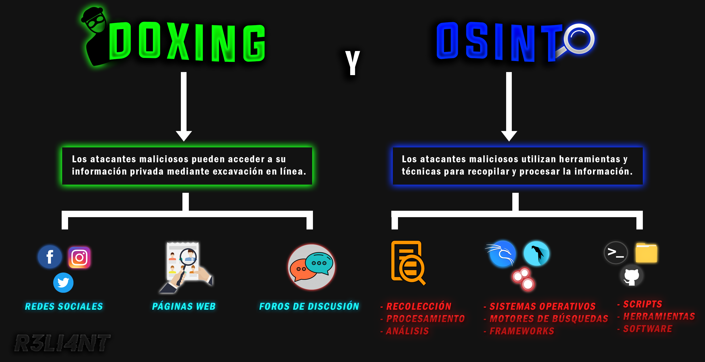

# ¿QUÉ ES EL 'DOXING'?
Cada vez es más complejo permanecer anónimo en internet, como si la única forma de serlo es desprenderse totalmente del teléfono móvil u ordenador en sí. Ya ni siquiera es seguro navegar tranquilo en páginas webs, pues, estas recopilan toda la información del usuario con las famosas "cookies". Ahora bien, hoy en día es posible conseguir fácilmente información privada de un usuario, basta con tan solo recurrir a las redes sociales. Los individuos que hacen está recopilación de datos personales lo hacen concretamente través de Facebook o Instagram debido a su popularidad, y a esto le agrego que los usuarios no tienen control de lo que publican en su muro ni la gravedad de la misma.

El Doxing se puede considerar una técnica o práctica en la que un usuario malintencionado realiza un labor de investigación profundo para recopilar toda la información posible sobre la persona para luego hacerla pública y que está sea hostigada. Generalmente, la información obtenida es en línea, aunque en ocasiones puede incluir información de su vida personal para que el acoso no solamente sea de en línea, sino también en la vida real de la víctima. Estas técnicas de recopilación son de todo tipo, desde búsquedas en sus perfiles de redes sociales y base de datos, hasta técnicas más avanzadas como hacking, ingeniería social, phishing y malware.
Gran parte de las personas que desconocen este término se preguntan -¿Y que información pueden obtener de mi?-, sin darse cuenta que por el simple hecho de usar una red social ya están "regalando" sus datos como nombre, estudios, trabajos, fecha de nacimiento, ubicación, gustos e información de familiares y amigos. Solo con el nombre de la persona es suficiente para que el atacante realice búsquedas en Google y que este le arroje información de algún cargo público que ocupe la persona (en caso de que lo fuera).
Tipos de DOXING
Existen diferentes tipos de doxing en los que concurre el acosador o atacante para apropiarse de la información y divulgar aquella cual vea más conveniente, es decir, más comprometedora para la víctima. Algunas de ellas son:
-
La dirección IP: En este caso, el atacante suele utilizar programas de tercero como lo es un script o IPLogger acompañada de ingeniería social para apropiarse de la IP de la víctima. La dirección IP pública revela información del usuario como su ubicación aproximada (en caso de no usar VPN/Proxy), puertos abiertos, lanzar ataques DDoS, vínculo con el ISP.
-
Malware: La incursión de malware es la más habitual y de las más peligrosas ya que no solo se basa en obtener información de sus datos personales, sino que el atacante también puede recopilar sus fotografías y tener el control del dispositivo infectado para ejecutar acciones en su contra sin que está sea prevista de nada.
-
Redes sociales: Es la técnica más utilizada debido que en las redes sociales se suele encontrar toda la información personal del individuo.
Métodos usados en el DOXING
Entre los métodos más destacados por doxxers se encuentran:
-
Phishing Scams: Los ataques de phishing van aumentado cada vez más, esto se debe a que no es necesario penetrar ningún sistema de seguridad ni evadir firewalls. Lo atacantes suelen camuflar una trampa (como lo es un link) para que la víctima acceda e introduzca sus credenciales. Los doxxers crean portales falsos con el código fuente de la página web y lo redireccionan a un servidor propio a escucha de capturar usuarios y contraseñas.
-
Búsqueda inversa de teléfono móvil: Esta técnica es muy útil para partir como base, al saber el número de la víctima podemos encontrar la fuente de sus redes sociales, nombre, dirección, nombre de la compañía, entre otros. Hay países en donde la normativa de protección de datos es bastante estricta, pero en otros no se tiene muy en cuenta y suelen parar en páginas blancas fácil de acceder con Google.
-
Packet Sniffing: La detección de paquetes es una técnica en la cual se detectan y observan los paquetes de datos que fluyen a través de la red. Muchos de estos datos muestran los sitios web que visita el usuario y dependiendo del protocolo (HTTP/HTTPS) se pueden leer/descifrar en texto plano las credenciales que introduce la víctima. Existen herramientas como Wireshark capaces de monitorear todo el tráfico de una red.
-
Data Broker Sites: Hay empresas dedicadas a recopilar información personal de varias fuentes y vender esa información a otras empresas, a esto se le conoce como "Corredores de Datos" y recopilan la información tanto fuera de línea como dentro. La información que obtienen puede variar, y, por lo general, incluyen el nombre, sexo, fecha de nacimiento, domicilio, planes, trabajos y más.
Google Hacking (Dorking)
Comenzamos con una de las técnicas más utilizadas en la rama del hacking, el "Google Dorking" o también conocido como "Google Hacking". Permítame explicarle de que se trata esta técnica y porque es tan efectiva. En la actualidad el motor de búsqueda más utilizado a nivel mundial es Google, y que, por el momento no hay otro que le de pelea. Al ser de los más utilizado contiene mucha información sensible expuesta que, en manos equivocadas, puede llegar a causar un daño bastante crítico dependiendo del caso. Este tipo de información o dato se puede obtener mediante comandos/parámetros/ o palabras claves. Por ejemplo, cuando queremos tener mejores resultados de búsqueda lo que solemos hacer es escribir una palabra clave (como lo es una canción o película) para que nos arroje resultados exactos a lo que estamos buscando. Aquí es donde viene lo jugoso, hay veces que los administradores de webs no ocultan bien el contenido sensible de su página, como puede ser un panel de administración o cámara de seguridad.
Uno de los ejemplos más comunes para encontrar datos de una persona es colocar su "nombre y apellido" entre comillas, lo mismo para "su DNI", "teléfono", "dirección de casa", "email", etc.
Por otro lado, si deseamos saber si nuestras credenciales o servicios online están expuestas en línea podemos usar los operadores inurl e intext tal que así: inurl: [URL de la web] AND intext: [contraseña].
Función de los operadores de búsqueda avanzados:
- INURL: Encuentra aquellas páginas que tengan una determinada palabra en la URL. Para este ejemplo, se mostrarán todos los resultados que tengan la palabra "orange".
$ inurl:orange juice- INTEXT: Encuentra aquellas páginas que contengan una cierta palabra en algún lugar de su contenido. Por ejemplo:
$ intext:login -
AND: Busca los resultados de X e Y. Por ejemplo, si en el operador inurl tenemos lo siguiente:
inurl:Bancoy en el operador intext:intext:login, luego lo combinamos tal que así:inurl:Banco AND intext:login. Buscará dentro de la página del banco (según el nombre que le indiquemos) el panel de logueo de usuarios. -
SITE: Google buscará aquellos resultados dentro de la web detrás del site. Por ejemplo:
$ help site:facebook.comPodemos utilizar las comillas ("") para obtener un resultado exacto, y más aún si le agregamos el parámetro anterior. Tal que así:
$ "Gerardo Miller" site:facebook.com- FILETYPE: Este parámetro se utiliza cuando queremos buscar resultados que contengan un tipo determinado de documento, por ejemplo, documentos PDF, Word (doc), Excel (xls), PowerPoint (ppt), etc. Es muy útil para encontrar bases de datos públicas o software.
$ "software" filetype:pptExisten muchos más operadores avanzados ha utilizar, si desean ver la lista completa pueden ingresar aquí. Si utilizamos el siguiente parámetro intitle:index.of "parent directory" podemos visualizar directorios de un servidor en especifico, es decir, de una web completa.
En el ejemplo anterior podemos determinar que la configuración de los directorios no es la mejor, ya que estos deberían estar en privado en caso de contener información confidencial. Pueden utilizarlo para buscar series, películas, canciones, credenciales o libros de pago, entre otras:
$ intitle:index.of "parent directory" breaking badOtros de los comandos que veremos a continuación es index.of, el cual permite ubicar los archivos logs dentro del servidor. Este archivo nos brinda información de la estructura del servidor, los cambios que se han hecho y otras actividades que se realicen dentro del servidor. WS_FTP es un cliente de FTP que crea automáticamente la aplicación y guarda un registro denominado WS_FTP.LOG. Este archivo contiene datos confidenciales, como el origen/destino del archivo y el nombre del archivo, fecha/hora de carga, etc. Para acceder a él se debe ingresar el siguiente dork en Google:
$ index.of ws_ftp.logComo se observa en la última captura, el servidor esta ejecutando por detrás una máquina Windows (disco C:). Para verificar si está información es correcta podemos hacer uso de nmap:
Unos de los vectores más aprovechados por los atacantes es entrar a las carpetas de administrador que están desprotegidas. El comando intitle:index.of inurl:"/ admin /*" lista todas las carpetas que se encuentren dentro del caracter admin.
La empresa de Offensive Security especializada en seguridad informática, tiene a disposición un sitio web en donde alberga una base de datos con exploits y dorks. Esta página web se va actualizando continuamente a medida que nuevas vulnerabilidades van apareciendo.
➤ https://www.exploit-db.com/google-hacking-database
Existen servicios gratuitos en Internet que facilitan la búsqueda de una persona en redes sociales, esto se debe generalmente porque las personas tienen un error de publicar mas de lo que se debe.
$ ➤ WhatsMyName Web: https://whatsmyname.app/
➤ CheckUsernames: https://checkusernames.com/
➤ Namechk: https://namechk.com/
➤ UserSearch: https://usersearch.org/
➤ InstantUsernameSearch: https://instantusername.com/#/Gracias al repositorio online de OSINT Framework es posible hacer uso de una multitud de recursos para llevar a cabo búsquedas en fuentes de información abierta como las ya mencionadas.
➤ https://osintframework.com/
El reconocimiento facial se ha vuelto una de las técnicas más empleadas para llevar a cabo búsquedas por medio de una fotografía, como lo es Google. Lo único que hay que hacer es tener una fotografía de la víctima (en lo posible con buena calidad) y Google se encargará se hacer todo el trabajo.
➤ https://images.google.com/
Uno de los clásicos dorks es la de buscar cámaras web públicas que se hayan filtrado ya sea por fallos de software de las cámaras o por carencias de configuración de las mismas. Si realizamos una búsqueda en google con la frase intitle:”Live View / – AXIS__ nos mostrará todas aquellas páginas web cuyo título tenga "Live View / – Axis", lo que nos llevará a muchos casos a una webcam de marca Axis.
# IP Logger
Antes de explicar de que trata un IP-Logger, es preciso tener un conocimiento básico de que es una dirección IP. El nombre IP significa "Protocolo de Internet". Se trata de un protocolo que sirve para las comunicaciones que viajan a través de las redes (llamados paquetes/datos) y que tienen un destino cordinado. A cada dispositivo o dominio web se le asigna una IP para conectarse a Internet (IP pública), los paquetes que se generan y llegan a su destino lo hacen de diferente forma según en función del protocolo de transporte que se utilice en combinación con la IP. Los protocolos de transportes más comunes son TCP y UDP, el TCP suele ser el protocolo más fiable debido que utiliza conexión y verifica que los datos sean enviados correctamente. Mientras que el UDP no utiliza conexión y solo envía los datos aunque no confirme su recepción ni compruebe datos, el primero (TCP) es más lento que el segundo (UDP).
Ahora bien, ya al tener claro qué es una IP y como funciona, proseguimos. Un IP-Logger es una herramienta que permite capturar la dirección IP de un usuario mediante un acortador que está genera. Las páginas web que normalmente visitas para leer noticias, descargar material, etc. ¿Qué datos registra o podría recopilar de nosotros? Estas páginas mediante las cookies y estadísticas pueden saber, por ejemplo, la ubicación de nuestro dispositivo, enlaces que ha visitado, sistema operativo, navegador que usa, entre otros datos personales. Cuando establecemos la conexión con algún servidor web, la dirección IP es uno de los datos que se comparte, lo que permite a su vez identificar las ubicación geográfica del dispositivo que estableció conexión.
Existen páginas como Grabify capaces de grabar una dirección IP mediante un link. Su uso es muy sencillo, basta con introducir una URL (en lo posible un dominio real) a la cual se va a dirigir al usuario y generar el acortador falso.
Como podemos observar, se genera un link el cual debemos de enviar a la víctima y esperar que acceda. A simple vista se ve muy sospechoso por lo que necesitamos un mejor enmascaramiento. Para ello, suelo utilizar el script MaskPhish:
Instalar en Debian:
$ git clone https://github.com/jaykali/maskphish
cd maskphish
bash maskphish.shUna vez que el usuario ingrese al enlace, de forma automática el IP-Logger capturará su IP y con ella podemos ubicar su posición geográfica por medio de un script o sitio web.
➤ https://github.com/rajkumardusad/IP-Tracer
➤ https://www.iplocation.net/ip-lookup
Si bien localizamos el país al que pertenece la IP, no sabemos exactamente la ubicación exacta ya que el ISP (Proveedor de servicio) establece una ubicación aproximada. Una vez que el atacante da con la IP de la víctima puede utilizarla para suplantar la identidad en sitios web y cometer delitos, vender datos personales, ser víctima de ataques de estafas y Botnet, entre otros. Recuerda siempre tener un VPN en la mano si sospechas de un enlace.
# ¿QUÉ ES EL 'OSINT'?
El OSINT (Open Source INTelligence), traducido como Inteligencia de Fuentes Abiertas, son aquellas técnicas o herramientas que se utilizan a la hora de recopilar información de una persona, empresa o entidad para luego ser analizadas. En pocas palabras, automatiza el proceso del Doxing "manual" gracias a herramientas creadas para su fin.
Claro está que no solo se utiliza para Doxing, sino también para etapas de reconocimiento de un pentesting (escaneo de hosts, dominios/subdominios, contraseñas, DNS, etc), prevención de ciberataques (análisis de metadatos e imágenes, motores de búsqueda, etc), entre otros. Se utiliza en una multitud de ámbitos tanto tecnológico, policial, militar como en marketing.
➤ FASES DEL PROCESO OSINT
OSINT cuenta con una serie de fases que sirven como guía para poder estructurar el trabajo y acelerar la investigación. A continuación veremos un breve resumen de estas fases:
-
Requisitos: En está primera fase entendemos qué problema tenemos que resolver y que información necesitamos.
-
Identificación de fuentes: Las fuentes que nos pueden ser de mayor utilidad para recabar información.
-
Adquisición: Etapa donde obtenemos la información.
-
Procesamiento: En esta parte se clasifica toda la información obtenida para una mejor estructura.
-
Análisis: A partir de todos los datos ya obtenidos, se aplica la inteligencia para encontrar relaciones entre datos.
-
Presentación: En la última etapa del OSINT se aplica un formato para que la información pueda ser comprendida y utilizada fácilmente.
# Herramientas
En esta sección hablaré de una serie de herramientas, las cuales nos podrán ser de gran utilidad al momento de hacer una investigación OSINT o fase de reconocimiento para el pentesting de un objetivo en concreto. Cabe mencionar que es una recopilación personal ya que he seleccionado algunas de las herramientas más interesantes, hay infinidad de herramientas y formará parte de nosotros elegir la que mejor se adapte a nuestro trabajo.
▪『Maltego』
Se trata de una potente herramienta automatizada que recopila información de un objetivo y lo muestra en forma de grafo, permitiéndonos así analizar fácilmente las diferentes relaciones. Al momento de buscar una empresa, dominio o nombre, esta herramienta proporciona datos muy útiles como la dirección de correo electrónico, números teléfonicos, artículos que tenga, y más. Está información se recibe de forma cruzada, nos servirá para hacer múltiples enumeraciones en vectores para tener una investigación más amplia.
Para usar Maltego es necesario instalarlo y registrarse en su página, al crear la cuenta nos va a permitir usar la aplicación junto a sus servidores públicos.
Instalar en Debian:
$ sudo apt-get install maltego➤ Registrarse: https://www.maltego.com/ce-registration/
Una vez registrado, deben abrir la aplicación y seleccionar la opción gratuita de Maltego.
Luego, aceptan los términos e introducen sus credenciales en la aplicacion.
Dentro de la aplicación podemos encontrar varios módulos desarrollados por empresas que podemos utilizar.
Por ejemplo, el módulo o proyecto "AbuseIPDB" ayuda a que los administradores de sistemas detecten aquellas direcciones IP que son o fueron vinculadas en actividades maliciosas, ofreciendo así una lista negra.
Otro de los módulos interesantes es "Google Social Network Transforms" para rastrear la huella digital de un usuario.
Lo primero que haremos es crear un nuevo gráfico. En la parte izquierda tenemos una serie de elementos para usar en nuestras investigaciones, lo que hay que hacer es arrastrar el item hacia el centro y modificar las preferencia que se muestran debajo a la derecha.
Hecho lo anterior, si le damos clic izquierdo al ítem se nos despliega varias opciones tales como: IP Address, Number, GPS, Emails, DNS Name, etc. Toda está búsqueda se va a realizar con el nombre específicado, lo que quiere decir que podemos obtener información válida como no.
Por ejemplo, podemos obtener direcciones de emails que contengan dicho alias/nombre:
Y si lo preferimos, Maltego también es capaz de vincular dicho correo con páginas u otras direcciones asociadas.
En caso de contar con el número telefónico de la víctima, la herramienta tratará se buscar relación con algún servicio online (proveedor de servicio, correos asociados, redes sociales, gps, etc).
Supongamos que el usuario cuenta con un dominio propio y queremos recopilar información personal, pero como es algo "tedioso" hacerlo manual preferimos que la herramienta lo haga por nosotros. Para ello, usamos el elemento website e ingresamos el dominio. Automáticamente Maltego empezará a buscar dentro del sitio web y desplegará redes sociales asociadas al dominio, direcciones de email, IPs, entre otros. Con doble clic vemos la información detallada del sub-elemento.
Como costumbre cuando queremos averiguar la ubicación aproximada de una IP recurrimos a localizadores online, Maltego tiene un elemento específico para esto.
Conclusión: Maltego es una herramienta que permite una búsqueda de metadatos de nivel organizado y legible para el usuario. Es útil si queremos saber que tan vulnerable son nuestros datos en la red y con que facilidad pueden hallarlos.
# ▪『OSINT Industries』
OSINT Industries es un proyecto especializado en rastrear la huella digital de un usuario mediante el seguimiento de su correo electrónico o número de teléfono. Es necesario crearse una cuenta para hacer uso de él, recomiendo utilizar un dirección de protonmail u onionmail.
➤ https://osint.industries/
Luego de ingresar el correo, automáticamente comenzará a vincular la dirección de email en más de 200 sitios web más utilizados.
# ▪『TinEYE』
Anteriormente hemos hablado de reconocimiento de imagen de Google para encontrar información de un usuario en particular, TinEye hace exactamente lo mismo pero la única diferencia es que este motor de búsqueda se basa en la tecnología de identificación imágenes y no en palabras claves, ni metadatos.
➤ https://tineye.com/
Hay dos formas de rastrear una imagen, la primera es subirla desde nuestro dispositivo (descargada) o pegar el link de la imagen desde una red social.
Al subir la imagen mostrará todos los resultados en la que aparece. Gracias a esta herramienta nos facilita la búsqueda de redes sociales y foros vinculados con la imagen de la persona, ahorrando así tiempo en búsqueda manual.
# ▪『Blackbird』
A finales de la década de 1950 se diseño un avión espía llamado "Blackbird SR-71", su uso no era para atacar, sino todo lo contrario, fue creado con la finalidad de espiar el territorio enemigo sin ser detectado o incluso derribado por su velocidad. A pesar que fue diseñado en la Guerra Fría, aún sigue siendo rápido. El creador de la herramienta se inspiró en este nombre para desarrollar su proyecto.
Blackbird es una herramienta OSINT escrita en Python que permite buscar rápidamente cuentas por nombre de usuarios en 581 sitios. Cada vez realiza una búsqueda de nombre de usuario, utilizará un UserAgent aleatorio disponible en su lista para evitar el bloqueo. En pocas palabras, lo que hace el UserAgent es identificarse con otro dispositivo, compañia o versión cuando hace la petición web.
Instalar en Debian:
$ git clone https://github.com/p1ngul1n0/blackbird
cd blackbird
pip install -r requirements.txtLas opciones son las siguientes:
-
-u: especificar el nombre del usuario.
-
--list-sites: Mostrar todos los sitios soportados.
-
-f: Guardar archivo de salida con los resultados.
-
--web: Correr la herramienta mediante el navegador web.
-
--proxy: Ejecutar herramienta por medio de un proxy configurado.
-
--show-all: Mostrar todos los resultados encontrados.
-
--csv: Exportar resultados en formato CSV para una mejor estructura.
Para el siguiente ejemplo buscaré mi alias:
$ python3 blackbird.py -u R3LI4NT -f reporte.txt --csvReporte en CSV (directorio /blackbird/results):
Ahora haré el mismo ejemplo pero que muestre los resultados en un servidor local web. Recuerden copiar la URL que les devuelve y pegarla en el navegador (Ej. http://127.0.0.1:9797/)
$ python3 blackbird.py --webNos da la posibilidad de exportar los resultados en formato PDF.
# ▪『Sherlock』
Sherlock es otra de las herramientas OSINT que permite buscar cuentas de redes sociales utilizando un nombre de usuario.
Instalar en Debian:
$ git clone https://github.com/sherlock-project/sherlock.git
cd sherlock
python3 -m pip install -r requirements.txtEl siguiente comando le pide a sherlock que realice una búsqueda del alias "R3LI4NT" y guarde los resultados (--output) en un archivo de texto.
$ python3 sherlock R3LI4NT --output reporte.txtLa opción (--print-all) imprime también los sitios donde el nombre de usuario no fue encontrado.
Por si fuera poco, le herramienta permite realizar las petición mediante la red Tor. Tenga presente que algunos sitios web pueden negarse a conectarse a través de Tor, puede llegar a tirar errores y disminuir la velocidad de búsqueda.
Descargar TOR:
$ sudo apt-get install tor$ python3 sherlock R3LI4NT --torEn cuyo caso de querer buscar al usuario en un sitio web específico, entonces usen el parámetro (--site NOMBRE). Ejemplo:
$ python3 sherlock R3LI4NT --site githubEn algunas circunstancias es preciso marcar un delay de búsqueda para evitar un bloqueo. Con la opción (--timeout SEG) podemos determinar los segundos de respuesta para cada petición. Ejemplo:
$ python3 sherlock R3LI4NT --timeout 5Otros datos interesantes es que podemos exportar los resultados en formato CSV, XLSX, JSON y utilizar proxies.
# ▪『PhoneInfoga』
La herramienta de PhoneInfoga es una de la más avanzadas para escanear números teléfonicos internacionales. Según el autor:
"Le permite recopilar primero información estándar, como país, área, operador y tipo de línea en cualquier número de teléfono internacional, luego buscar huellas en los motores de búsqueda para intentar encontrar el proveedor de VoIP o identificar al propietario."
➤ https://sundowndev.github.io/phoneinfoga/
Instalar en Debian:
$ bash <( curl -sSL https://raw.githubusercontent.com/sundowndev/phoneinfoga/master/support/scripts/install )
sudo mv ./phoneinfoga /usr/local/bin/phoneinfoga
phoneinfoga --helpUtilice el comando scan junto con -n para identificar el número. Por ejemplo:
$ phoneinfoga scan -n "+12252542523"El parámetro scanners nos despliga los motores de búsqueda de soporta para recopilar información del número.
$ phoneinfoga scannersPara iniciar la interfaz de usuario web desde la línea de comandos, deberá utilizar la palabra clave serve. De forma predeterminada, el servidor escuchará en TCP 5000; sin embargo, uso -p para especificar un puerto. En mi caso usé 8080 (http://127.0.0.1:8080/).
$ phoneinfoga serve -p 8080Si pegamos algún resultado que nos arrojo de Google podemos obtener información sobre las páginas en la que se registro con el número. Asegúrense de cortar la serie de caracteres hasta las comillas dobles como se muestra en la imagen.
# ▪『Maigret』
Otra de las alternativas de Sherlock es Maigret, una poderosa herramienta OSINT que busca cuentas de usuarios en un gran número de sitios web y recopila toda la información que este disponible de manera pública. Según el creador, una de sus ventajas es que no necesita claves API para utilizarla.
Instalar en Debian:
$ git clone https://github.com/soxoj/maigret && cd maigret
pip3 install -r requirements.txtEl siguiente parámetro permite buscar a un usuario en todos los sitios disponibles:
$ python3 maigret.py "Usuario" -a -T-
a: Escanear en todos los sitios.
-
-T: Crear archivo de reporte .TXT con los datos del usuario guardado.
Si quisieramos saber si el usuario existe en un sitio en particular:
$ python3 maigret.py "Usuario" --site SITIO_NOMBRE# ▪『Holehe』
Holehe es una útil herramienta que comprueba si hay un correo electrónico asociado a una cuenta en más de 120 sitios.
Instalar en Debian:
$ git clone https://github.com/megadose/holehe.git
cd holehe/
python3 setup.py installUna vez instalado, ejecutan el nombre de la herramienta + la dirección de correo electrónico. Ejemplo:
$ holehe pedrito123@gmail.com# DOXBIN
Doxbin fue un foro malicioso y notorio de la darkweb creado por el usuario nachash. En este sitio web se publicaban datos personales de un individuo u organización como: nombres, direcciones, números de seguridad social, historiales de atención médica y otros detalles personales. En el año 2014 la cuenta oficial de Doxbin en twitter fue suspendida, lo que llevo al sitio a recopilar y publicar información de los fundadores y director ejecutivo de Twitter. La jueza Katherine Forrest quien supervisaba el caso del mercado negro Silk Road había sido objetivo de Doxbin luego de que sus datos fueron expuestos en la "The Hidden Wiki".
➤ Fuente: https://arstechnica.com/tech-policy/2014/10/death-threats-against-judge-in-silk-road-trial-emerge-from-darknet/
En noviembre de 2014 se llevo a cabo una operación llamada "Onymous" iniciada por el FBI y Europol. Esta operación internacional tenía como objetivo atacar y cerrar mercados negros de la darknet y otros sitios ilegales que operaban en la red Tor (como Doxbin).
Actualmente el sitio se encuentra disponible y se puede acceder desde el motor de Google a través de tres dominios (doxbin.com | doxbin.net | doxbin.org).
# CONCLUSIÓN GENERAL
En este artículo hemos podido ver que tan vulnerable puede ser nuestra información en la red, lo fácil que es para cualquier atacante hacerse propietario de datos personales de un individuo con herramientas públicas. Todavía hay datos personales que tienen la misma demanda que hace una década, sobre todo las tarjetas de crédito y servicios electrónicos.
Es casi imposible mantener el anonimato en Internet considerando que los rastros que vamos dejando en la red son cada vez mayores. Aunque eliminemos nuestras redes sociales seguiríamos siendo un blanco de cualquier atacante ya que posiblemente tengamos familiares u amigos con redes sociales que pueden vendernos. Aquí no te voy a enseñar tácticas anti-doxing porque el artículo va de todo lo contrario, pero pueden emplearlo consigo mismo para saber que tan expuesta esta tu información.
Y recuerda, si no quieres salir dañado, tampoco dañes a otros.